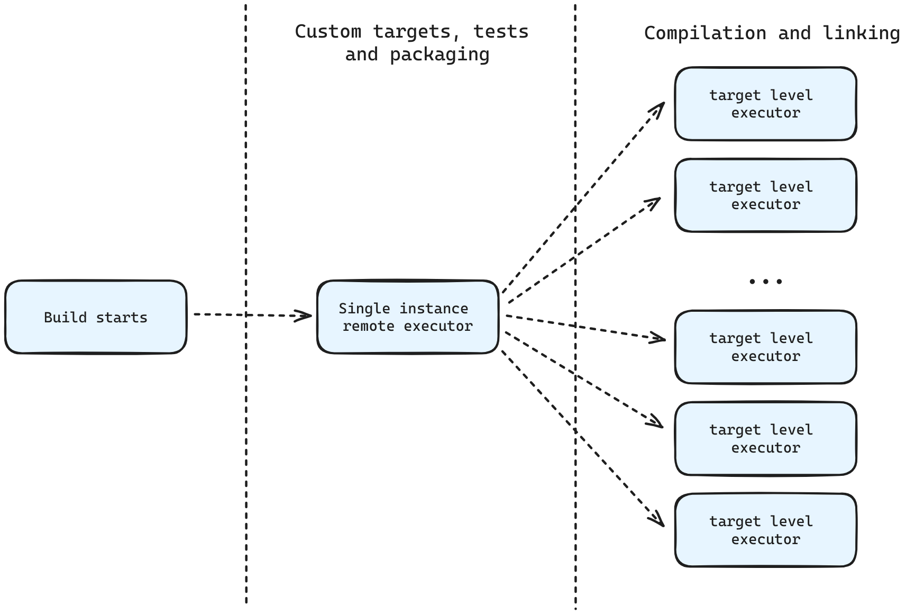

Defining safety in software
C++ cares about Safety
- Keynote: All the Safeties, Sean Parent - C++ on Sea 2023 :
youtu.be/BaUv9sgLCP - C++ and Safety, Timur Doumler - C++ on Sea 2023 :
youtu.be/imtpoc9jtOE - Safety and Security: The Future of C++, JF Bastien - CppNow 2023 :
youtu.be/Gh79wcGJdTg
Are we there yet ?

Are we there yet ?
| Are We "Thing" Yet | |
|---|---|
| Are We Web Yet | ✅ |
| Are We Game Yet | ✅ |
| Are We Async Yet | ✅ |
| Are we safe yet? | ü¶Ü |
| Are We GUI Yet | ✅ |
| Are we stack-efficient yet? | ✅ |
Are we safe yet ?
We could !
It's more configuration work üêå
Are we safe yet ?
We should !


What is Safety ?
- Type Safety
- Memory Safety
- Lifetime safety
- Bounds safety
- Initialization safety
- Object access safety
- Thread Safety
- Arithmetic safety
- Definition safety
Software Supply Chain Safety ?
- Reproducibility
- Traceability
- Release delivery time
Perspectives and Boundaries
fn calculate_sha1(path: &Path)
-> std::io::Result<[u8; 20]> {
let mut file = open_file(path)?;
let size
= file.metadata().map(|m| m.len() as usize);
let mut buffer
= Vec::with_capacity(size.unwrap_or(0));
file.read_to_end(&mut buffer)?;
...
}
Perspectives and Boundaries
fn calculate_sha1(path: &Path)
-> std::io::Result<[u8; 20]> {
let mut file = open_file(path)?;
let size
= file.metadata().map(|m| m.len() as usize);
let mut buffer
= Vec::with_capacity(size.unwrap_or(0));
// This can panic -^
file.read_to_end(&mut buffer)?;
...
}
Perspectives and Boundaries
fn calculate_sha1(path: &Path)
-> std::io::Result<[u8; 20]> {
let mut file = open_file(path)?;
let size
= file.metadata().map(|m| m.len() as usize);
let mut buffer
= Vec::with_capacity(size.unwrap_or(0));
// This can panic -^
// static-analysis can't help
file.read_to_end(&mut buffer)?;
...
}
This cannot be caught without testing and fuzzing.
Fuzzing has nothing to do with newer syntax and object models.
Achieving safety in C++ today
with CMake
Achieving safety in C++ today
with CMake
- Memory Safety
- Arithmetic Safety
- Software Supply Chain Safety
Requirements for C++ Successor Languages
- Iterative migration
- CMake compatibility
A love ❤️ letter to CMake
Thank you CMake üôèüèº
autotools, qmake and SCons almost disappeared üéØ
"CMake is a crappy C" - Bill Hoffman
CMake is about the timelessness of your builds.
Comparing
build-systems
Parallelism
How many independent targets can a build system run concurrently at most?
Parallelism
Level 1 - Gradle
. ├── app │ ... │ └── build.gradle ├── lib │ ... │ └── build.gradle └── settings.gradle
Parallelism
Level 1 - Gradle
Sub-project level parallelism. It is very limited as projects have very low granularity and are limited in numbers. It is disabled by default
Parallelism
Level 2 - Make, FASTBuild
Targets are more granular and the size of the job pool can be specified by a flag (-j/--jobs)
Parallelism
Level 3 - Bazel
Same as the level before, but resource-intensive targets can reduce the level of parallelism on-demand
Parallelism
Level 4 - Ninja
You can define separate job-pools each of which with a different size (eg: link=1 and cc=16)
Will it CMake?
Job pools can be used when compiling...
set_property(GLOBAL PROPERTY JOB_POOLS
compile=16
link=1
codegen=16)
set_property(TARGET atarget
PROPERTY JOB_POOL_COMPILE compile)
set_property(TARGET atarget
PROPERTY JOB_POOL_LINK link)
add_custom_target(protocgen
COMMAND protoc --cpp_out=./out server.proto
JOB_POOL codegen
SOURCES server.proto)
Will it CMake?
... and linking ...
set_property(GLOBAL PROPERTY JOB_POOLS
compile=16
link=1
codegen=16)
set_property(TARGET atarget
PROPERTY JOB_POOL_COMPILE compile)
set_property(TARGET atarget
PROPERTY JOB_POOL_LINK link)
add_custom_target(protocgen
COMMAND protoc --cpp_out=./out server.proto
JOB_POOL codegen
SOURCES server.proto)
Will it CMake?
... and pretty much anywhere else üòÅ
set_property(GLOBAL PROPERTY JOB_POOLS
compile=16
link=1
codegen=4)
set_property(TARGET atarget
PROPERTY JOB_POOL_COMPILE compile)
set_property(TARGET atarget
PROPERTY JOB_POOL_LINK link)
add_custom_target(protocgen
COMMAND protoc --cpp_out=./out server.proto
JOB_POOL codegen
SOURCES server.proto)
Caching
How many targets can a build system avoid rebuilding?
Caching
Level 1 - Gradle
Once again the low level of granularity means that even small changes will rebuild very large targets
Caching
Level 2 - Make, Ninja
Check timestamps on the individual input files and rebuild targets if any change. Caching is completely file-system based and uses the mtime of a file to detect if it has changed since the last build
Caching
Level 3 - FASTBuild
Supports the same type of file-system caching as the previous level and adds support for distributed caching
Caching
Level 4 - Bazel
Supports file-system and distributed caching as with the previous level, but based on the digest of the input files' content rather than mtime. Bazel also has an in-memory cache for large build graphs
Will it CMake?
By using Make or Ninja we get file-system caching out-of-the-box
Will it CMake?
However, we can replace the standard CMake client with tipi. Engflow and Tipi partnered to bring remote execution and caching to CMake!
Will it CMake?

Reproducibility
Given the same inputs and configuration, a target should yield identical outputs
Reproducibility
Level 1 - Make, Ninja, FASTBuild
Provide no real facility to ensure reproducibility and, thus, hermeticity is something that the developers have to take care of
Reproducibility
Level 2 - Meson
Allows you to query and introspect tools during a build and configure them to get reproducibile results as well as define toolchains
Reproducibility
Level 3 - Gradle
Predefines robust and easy to configure toolchains out of the box. This way builds do not normally rely on any system-wide installed tools/libraries that can change between different workstations
Reproducibility
Level 4 - Bazel
Toolchains are treated as normal inputs. This trivially allows defining custom toolchains whilst keeping the same level of reproducibility
Will it CMake?
Actually, yes! But we have a few problems to fix üòé
Will it CMake?
Problem 1: file ordering matters
Building `a.cpp` and `b.cpp` can yield different results from building `b.cpp` and `a.cpp`!
Will it CMake?
Problem 1: file ordering matters
Luckily CMake forces you to write input sources manually, so ordering is guaranteed!
Will it CMake?
Problem 2: __DATE__ and __TIME__ macros
Because these macros change with each and every compilation they will always invalidate a large portion of the build
Will it CMake?
Problem 2: __DATE__ and __TIME__ macros
MSVC
add_link_options("/Brepro")
Will it CMake?
Problem 2: __DATE__ and __TIME__ macros
Clang (via an environment variable)
ZERO_AR_DATE=0
Will it CMake?
Problem 2: __DATE__ and __TIME__ macros
GCC (via an environment variable)
SOURCE_DATE_EPOCH=628727383
Will it CMake?
Problem 3: Randomness when using `-flto` with GCC
LTO on GCC will produce intermediary files with completely random names
Will it CMake?
Problem 3: Randomness when using `-flto` with GCC
set(APP_SOURCES
app.cpp
lib.cpp)
foreach(_file ${APP_SOURCES})
file(SHA1 ${_file} sha1sum)
string(SUBSTRING ${sha1sum} 0 8 sha1sum)
set_property(SOURCE ${_file}
APPEND_STRING PROPERTY
COMPILE_FLAGS
"-frandom-seed=0x${sha1sum}")
endforeach()
Will it CMake?
Problem 4: __FILE__ macro
The __FILE__ macro is very likely to change between different workstations and thus produce different results
Will it CMake?
Problem 4: __FILE__ macro
Tipi relocates your code under a common path that is the same for all users
Will it CMake?
Problem 5: Different toolchains
Using different toolchains or different versions of the same toolchain can cause different results
Will it CMake?
Problem 5: Different toolchains
Tipi introduces reproducibile toolchains that can also be used remotely
Dependency management
How a build system handles 3rd-party code
Dependency management
Level 1 - Make, Ninja, FASTBuild
No support at all, the developer gets to decide how to handle dependencies
Dependency management
Level 2 - Gradle
Dependency management focuses on handling jars but is very crude everywhere else
Dependency management
Level 3 - Meson, Bazel
Both provide somwhat extensible mechanisms to resolve dependencies for multiple languages and both provide centralised repositories of dependencies tweaked to better work with the respective build systems
Will it CMake?
Yes! CMake offers both `ExternalProject_Add` and `FetchContent` that can be used to manage dependencies
Will it CMake?
There are also OSS tools to generate SBOMs: https://github.com/DEMCON/cmake-sbom
Distributed/remote builds
The ability of a build system to cache and/or run targets on a shared distributed system
Distributed/remote builds
The ability of a build system to cache and/or run targets on a shared distributed system
* also known as the thing that pays my salary :)Distributed builds
Level 1 - Make, Ninja, Meson
No distributed caching or execution out of the box, everything runs locally
Distributed builds
Level 2 - Gradle
Has support for remote caching, but no remote execution of build targets. Once again the low level of granularity negatively impacts the potential of this feature
Distributed builds
Level 3 - FASTBuild
Supports both distributed execution and caching, however it is limited to just a list of well-known compilers when it comes to remote execution
Distributed builds
Level 4 - Bazel
Supports both distributed builds and caching for arbitrary tools, including compilers, linkers, tests and whatever you can think of
Will it CMake?
100%! We can combine Engflow's Remote Execution, which uses the same RE level protocol Bazel adopts, and tipi's single instance approach.
Will it CMake?
Demo time!
Or how much of this can we implement before Damien goes completely insane?Give it a try
Request access to the BETAhttps://tipi.build/cmake-re